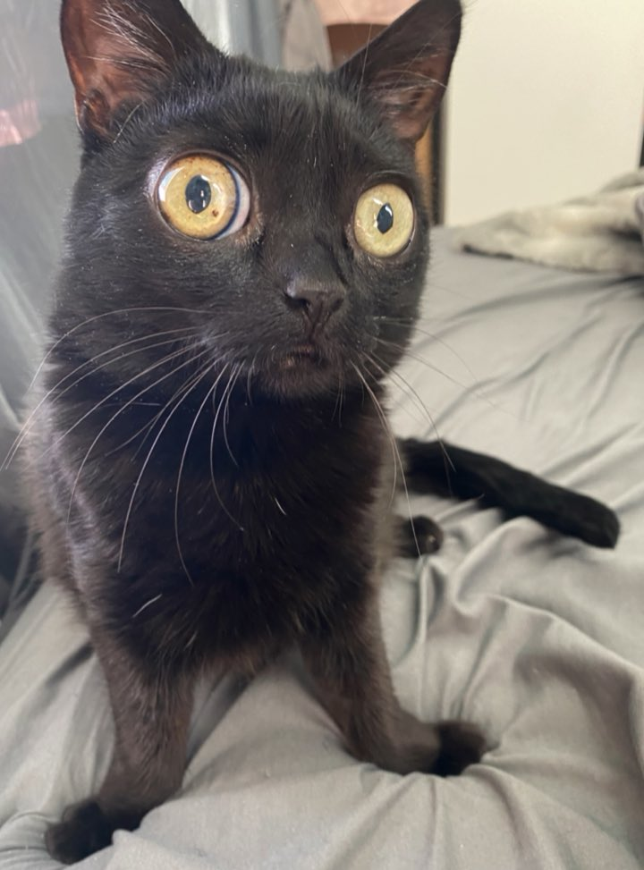
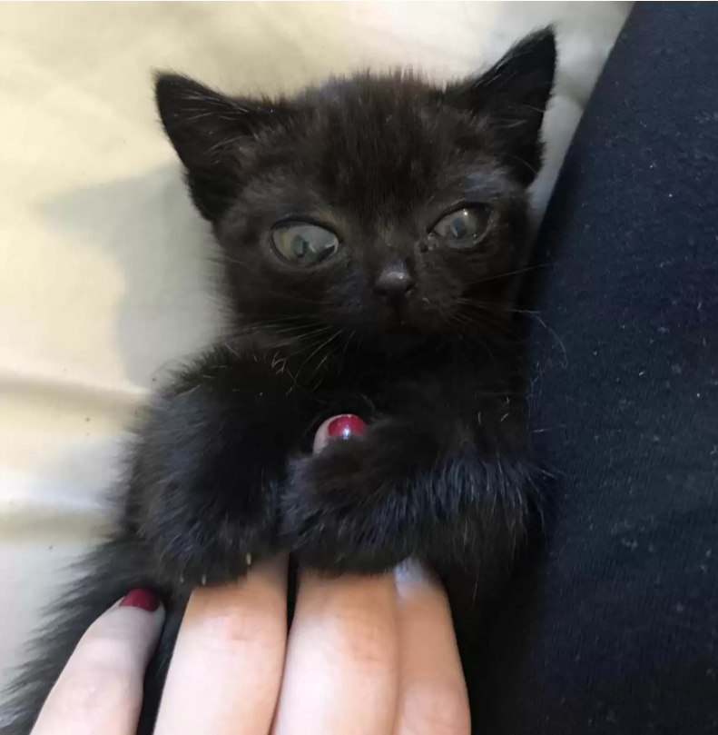
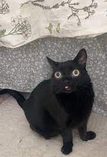

Who is Jinx?
Jinx was only three months old when Mia, Jinx’s owner, found her in a field during a cold and stormy night. Mia harbored Jinx in her home, and thus began the everlasting relationship between human and feline. Jinx looked like an extraterrestrial creature when she found her, with huge, bulging eyes and fluffy paws. Mia nursed Jinx back to health and decided to keep her as her own. Jinx has now been living with Mia for three years, and in that time, the cat has changed dramatically. Along with her body, her eyes and feet grew beyond what is considered normal. These quirks that Jinx possesses are birth defects, but overall the cat is perfectly healthy. At the beginning of Jinx’s life, she had difficulty walking because of her birth defect. It took Jinx some time to get used to her very long feet, and now she’ll use them as a cushion when she’s resting! Jinx has a very distinctive personality, as she will pick whom she wishes to be around. If Jinx dislikes the individual, she will express her grievances by scratching and hissing at the individual. If she approves of the person, she will enjoy being in the presence of that person. She also enjoys playing with hairbands, as she will use her paws and try to fling them around and such. She is also known to be a night owl, often playing in bed at night by prancing around or clawing the mattress.
  